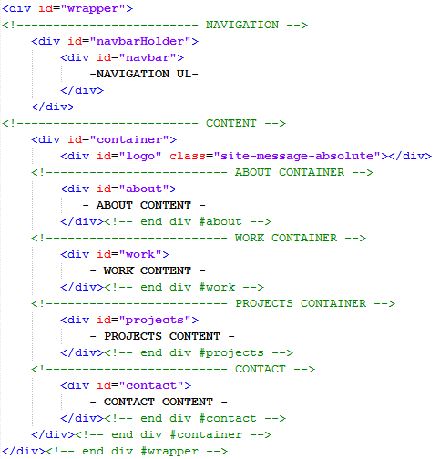
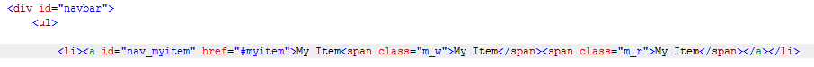
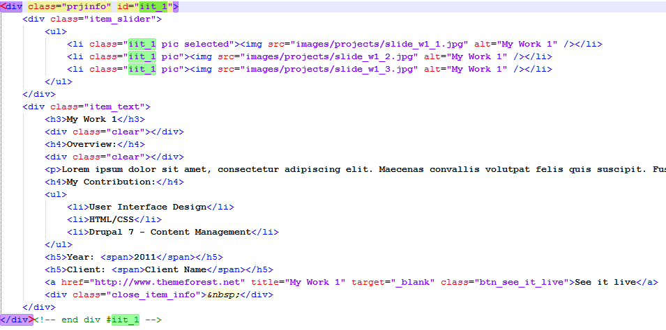
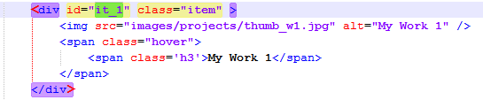
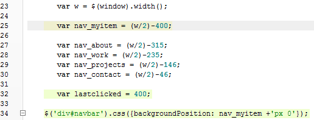
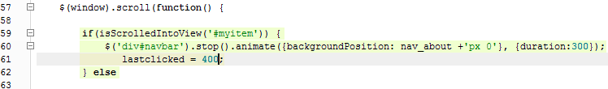
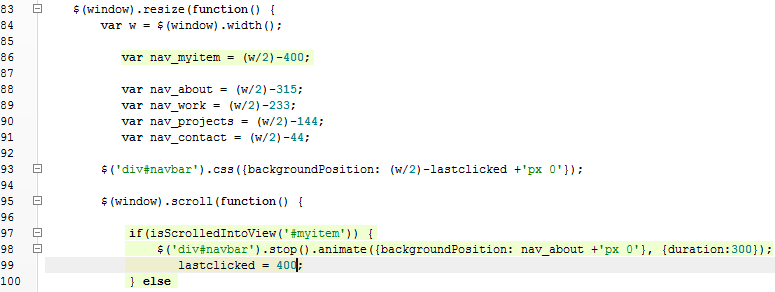

JD Portfolio template
Created: 6/27/2011
By: Mihai Balea
Email: contact@mihaibalea.info
Table of Contents:
HTML Structure - top
This theme is a one page site tamplate. It is organized in 2 main areas: Navigation and Content (About, Works, Projects, Contact)
-------------------------------------------------------------
Menu Editing - HTML
To edit the menu is a little tricky. First of all you have to add a "li" in the "#navbar" container as follows:
-------------------------------------------------------------
After doing this, here you can see the changes for the javascript part.
Add work
To add the details about one project, you just have to duplicate one of the divs that have the class ".prjinfo" and all of its content. Then change the id and the class "iit_number" (highlighted areas). To add some preview screenshots of your work, add as many images as you want in the "item_slider" div. (for the screenshots you can use 'slide_works.psd')
-------------------------------------------------------------
As for the thumbnails, go to the "#prjGrid" div and add an item with the id "it_number" like this: (for the thumbnail you can use 'thumb.psd')
-------------------------------------------------------------
Add project
For adding a project, duplicate one of the divs ".pprj" with all of its content, and then modify the details, including the screenshot. (For the thumbnail you can use 'thumb_project.psd')
CSS Files and Structure - top
I'm using two CSS files in this theme.
"skins.css" contains the tools container, used to switch the colors. Also it contains all the classes and ids that are color related. If you want to remove the tools container from the html file, you can change the color theme by adding a color class to the body.
The "style.css" includes the reset for the css. Here you can find all the classes and ids that you need. The file is structured as follows:
/* RESET
__________________________________________________________
*/
some code
/* GLOBAL
__________________________________________________________
*/
some code
/* LAYOUT
__________________________________________________________
*/
some code
/* TYPOGRAPHY
__________________________________________________________
*/
some code
/* LINKS
__________________________________________________________
*/
some code
/* TOP NAVBAR
__________________________________________________________
*/
some code
/* ABOUT
__________________________________________________________
*/
some code
/* WORK
__________________________________________________________
*/
some code
/* PROJECTS
__________________________________________________________
*/
some code
/* CONTACT
__________________________________________________________
*/
some code
/* QUERY LOADER
__________________________________________________________
*/
some code
One more think about the css that should be mentioned is that I use google web fonts for importing 'Oswald' font, that you can find here.
JavaScript - top
This theme imports seven Javascript files.
- jquery.1.4.2.min.js - jQuery
- js.js - My custom scripts
- sp.js - move divot scripts
- skins.js - tools scripts
- jquery.backgroundposition.js
- jquery.smooth-scroll.js
- queryLoader.js
Menu Editing - Javascript
In order to make the divot work, you'll have to open the sp.js file, located in the "js" folder. Below I have highlighted what you have to add.
-------------------------------------------------------------

-------------------------------------------------------------

-------------------------------------------------------------
The number "400" that you see it keeps repeating, it's the distance between the middle of the divot and the right margin of the "#navbar" container. This distance varies depending of the length of your item text.
PSD Files - top
I've included five psds with this theme:
-
PageLayout.psd
This is the main layout for the theme.
-
Sprites.psd
This contains the images for the icons and the navbar. I also did the slicing sctructure for you.
-
SlideWorks.psd
You can put your screenshots in the Images Group.
-
ThumbProject.psd
You can put your screenshots in the Images Group.
-
Thumb.psd
You can put your screenshots in the Images Group.
Thanks for downloading this theme. I'd be glad to help you if you have any questions relating to this theme.